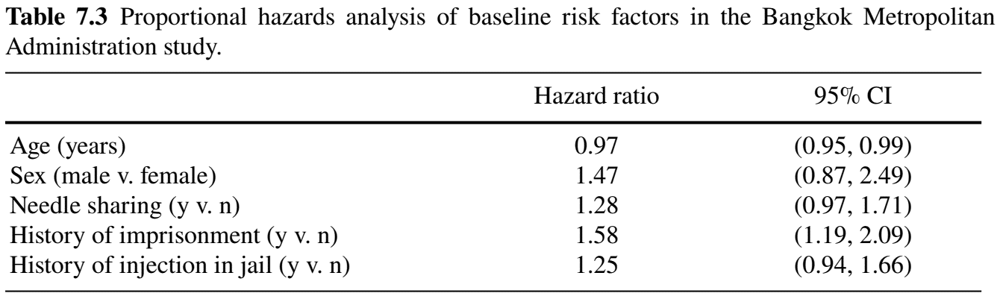
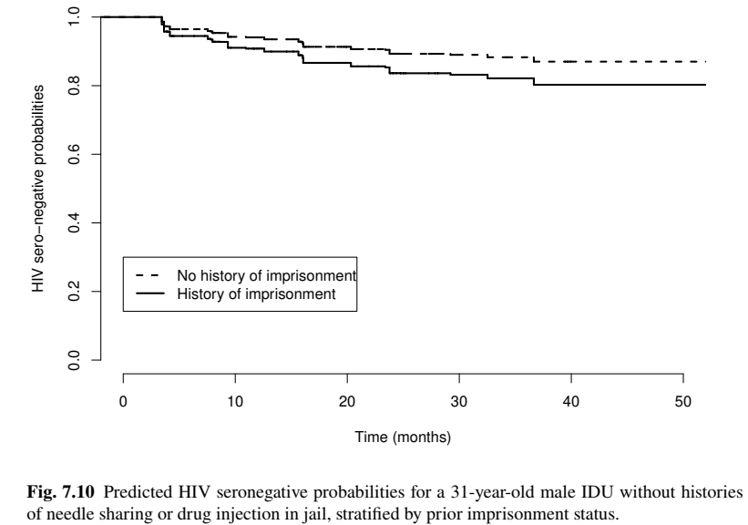

Applied Survival Analysis
Chapter 7 - Left Truncation and Interval Censoring
Department of Biostatistics & Medical Informatics
University of Wisconsin-Madison
Outline
Left truncation mechanisms
Standard and general methods for left truncation
Non- and Semi-parametric methods for Interval censoring
Bangkok Metropolitan Administration HIV Study
\[\newcommand{\d}{{\rm d}}\] \[\newcommand{\T}{{\rm T}}\] \[\newcommand{\dd}{{\rm d}}\] \[\newcommand{\pr}{{\rm pr}}\] \[\newcommand{\var}{{\rm var}}\] \[\newcommand{\se}{{\rm se}}\] \[\newcommand{\indep}{\perp \!\!\! \perp}\] \[\newcommand{\Pn}{n^{-1}\sum_{i=1}^n}\]
Left Truncation: Mechanisms
Truncation - Biased Sampling
- Left truncation
- Only subjects who fail in \([T_L, \infty)\) can be observed
- \(T_L\): left truncation time
- Those who fail in \([0, T_L)\) are excluded (truncated)
- Biased sampling \((T\geq T_L)\)
- Only subjects who fail in \([T_L, \infty)\) can be observed
- Mechanism: delayed entry
- Subject entering study after starting point

Examples of Delayed Entry
- Starting point: before enrollment
- Birth: age at death
- Dead before enrollment excluded
- Diagnosis of cancer: time from diagnosis to death
- Dead before enrollment excluded
- Blood transfusion: time from tranfusion to AIDS
- Positive before enrollment excluded
- Birth: age at death
Truncation vs Censoring
- Difference
- Truncation : Biased sampling
- Censoring: Partial missing data
- Left truncation \(+\) right censoring
Left Truncation: Methods
Data and Assumption
- Target of inference: still \(T\)
Observed data \[ (T_{Li}, X_i, \delta_i) \,\,\, (i=1,\ldots, n) \]
- \(T_{Li}\): left truncation (delayed entry) time for subject \(i\)
Independent truncation \[T_L\indep T\]
- In case with covariates \((T_L\indep T)\mid Z\)
Standard Methods
- Methods by at-risk conditioning
- Kaplan–Meier estimate
- Log-rank test
- Cox model
- Easy fix: adjust at-risk status
- Subject not at risk before entry
- At risk (on study): \([T_{Li},\; X_i]\)
Standard Methods: Nonparametric (I)
- Nelsen-Aalen estimator: \(\dd\hat\Lambda(t_j)=d_j/n_j\)

- Without late entry: \(n_j=\sum_{i=1}^nI(X_i\geq t_j)\)
- With late entry: \(n_j=\sum_{i=1}^nI(T_{Li}\leq t_j\leq X_i)\)

- Kaplan-Meier estimator \[ \hat S(t)=\prod_{j: t_j\leq t}\left(1 - d_j/n_j\right) \]
Standard Methods: Nonparametric (II)
- Identifiability
- Suppose earliest entry time \(t_0=\min(T_{Li})>0\)
- No data in \([0, t_0]\)
- Conditional survival function \[\begin{align}
\hat S(t)&\to \pr(T>t_1\mid T>t_0)\pr(T>t_2\mid T>t_1)\cdots\pr(T>t\mid T>t_j)\\
& = \pr(T>t \mid T>t_0)
\end{align}\]
- Not the marginal \(\pr(T>t)\)
- Solution: choose a late \(t_0^*> t_0\) (s.t. \(n_j\gg 1\) for all \(t_j\geq t_0^*\)) and consider \[\begin{equation} \hat\pr(T>t\mid T \geq t_0^*)=\prod_{j:t_0^*\leq t_j\leq t}(1-d_j/n_j), \end{equation}\]
Standard Methods - Cox Model (I)
- Partial likelihood construction
- Without late entry: \(\mathcal R_j=\{i: X_i\geq t_j\}\)
- With late entry: \(\mathcal R_j=\{i: T_{Li}\leq t_j\leq X_i\}\)
Standard Methods - Cox Model (II)
- Risk sets: example
Standard Methods - Cox Model (III)
- Partial-likelihood score
- Adjust the at-risk process \[ U_n(\beta)=\Pn\int_0^\infty\left\{Z_i-\frac{\sum_{j=1}^n I(T_{Lj}\leq t\leq X_j)Z_j\exp(\beta^\T Z_j)} {\sum_{j=1}^n I(T_{Lj}\leq t\leq X_j)\exp(\beta^\T Z_j)}\right\}\dd N_i(t) \]
- Other extensions
- Log-rank test: \(U_n(0)\) with binary \(Z\)
- Martingale residuals: \[ \dd M_i(t)=\dd N_i(t)-I(T_{Li}\leq t\leq X_i)\exp(\beta^\T Z_i)\dd\Lambda_0(t) \]
- Time-varying covariates
Standard Methods - Cox Model (IV)
- Prediction of survival rate
If all subjects enter late, choose late cutoff \(t_0^*\)
Conditional survival function \[\begin{equation} \hat\pr(T > t\mid T\geq t_0^*, Z) = \exp\left[-\left\{\hat\Lambda_0(t)- \hat\Lambda_0(t_0^*)\right\}\exp(\hat\beta^\T Z)\right] \end{equation}\]
Exercise
Show that \[\pr(T > t\mid T\geq t_0^*, Z) = \exp\left[-\left\{\Lambda_0(t)- \Lambda_0(t_0^*)\right\}\exp(\beta^\T Z)\right] \] for any \(t>t_0^*\) under the Cox model.
General Approach - Likelihood
- Non-hazard-based methods
- Proportional odds model
- Accelerated failure time model
- Re-construct likelihood
- A model parametrized by \(\theta\) \[\begin{equation}\label{eq:trunc:lik}
L_n(\theta)=\prod_{i=1}^n S(T_{Li};\theta)^{-1}\lambda(X_i;\theta)^{\delta_i}S(X_{i};\theta)
\end{equation}\]
- Every subject sampled is conditioned upon \(T_i\geq T_{Li}\), hence inverse weight \(S(T_{Li};\theta)\)
- Log-likelihood: \(l_n(\theta)=\sum_{i=1}^n\left[\delta_i\log\lambda(X_i;\theta)-\left\{\Lambda(X_i;\theta)-\Lambda(T_{Li};\theta)\right\}\right]\)
- A model parametrized by \(\theta\) \[\begin{equation}\label{eq:trunc:lik}
L_n(\theta)=\prod_{i=1}^n S(T_{Li};\theta)^{-1}\lambda(X_i;\theta)^{\delta_i}S(X_{i};\theta)
\end{equation}\]
Maximum Likelihood: PO Model
- Example: Proportional odds model
- Model specification with \(\theta = (\beta, h_0)\) \[\begin{equation}\label{eq:non_haz:po} \log\left\{\frac{1-S(t\mid Z)}{S(t\mid Z)}\right\}=h_0(t)+\beta^\T Z, \end{equation}\]
- Model-based hazard functions \[\begin{align} \lambda(t\mid Z;\beta, h_0)&=\frac{\exp\{h_0(t)+\beta^\T Z\}h_0'(t)}{1+\exp\{h_0(t)+\beta^\T Z\}}\\ \Lambda(t\mid Z;\beta, h_0)&=\log\left[1+\exp\{h_0(t)+\beta^\T Z\}\right] \end{align}\]
- Nonparametric maximum likelihood (NPMLE)
- Discretize \(h_0(\cdot)\) at observed event times \(t_1<\cdots<t_m\)
- \(h_0'(t_j)=h_{0j}\); \(h_0(t)=\sum_{j:t_j\leq t}h_{0j}\)
Software: survival::Surv()
- Basic syntax for handling left truncation
Input
entry: \(T_{L}\);end: \(X\);status: \(\delta\)
Output:
survfitorcoxphobjectlog-rank test: score test under
coxph()
Example: Channing House Study (I)
- Study information
- Population: 462 elderly residents of Channing House, a retirement center
- Endpoint: Age at death (starting point: birth)
- Aim: Compare mortality between males (
gender=1) and females (gender=2) - Truncation: Age of admission into the center (
Entry.Age)- Subject must survive long enough to enter cohort (link to follow-up plot)
{kind=link}
Example: Channing House Study (II)
- Cox model
- females at 72.9% risk as males for mortality (\(p\)-value 0.07)
obj <- coxph(Surv(Entry.Age, End.Age, status) ~ factor(gender),
data = channing)
summary(obj)
# coef exp(coef) se(coef) z Pr(>|z|)
# factor(gender)2 -0.3163 0.7289 0.1731 -1.827 0.0677 .
# ---
#
# exp(coef) exp(-coef) lower .95 upper .95
# factor(gender)2 0.7289 1.372 0.5191 1.023
#
# Concordance= 0.528 (se = 0.018)
# Likelihood ratio test= 3.17 on 1 df, p=0.07
# Wald test = 3.34 on 1 df, p=0.07
# Score (logrank) test = 3.36 on 1 df, p=0.07Example: Channing House Study (III)
Example: Channing House Study (IV)
- Prediction (at age 70)
Interval Censoring
Observation Setting
- Interval censoring
- Periodic check-ups for an asymptomatic event
- Event is only known to have occurred in between two consecutive check-ups
- Examples
- Tumor (occult) formation
- HIV seroconversion (viral antibodies become detectable in serum)
- Challenge
- No exact failure time is observed
Data and Assumption
- Target of inference: still \(T\)
- Check-up times: \(U=(U_1<U_2<\cdots<U_K)\)
- \(K\equiv 1\): case-1 (current status data)
- \(K\equiv 2\): case-2
- \(\vdots\)
- \(K\) random (subject-specific): mixed-case
- Independent check-up \[
U\indep T
\]
- With covariates: \((U\indep T)\mid Z\)
Observed Data
- Censoring interval
- \((L, R]\): the check-up interval containing the event
- Other check-up times may be available but not relevant
- Example: current status data
- “Positive” at \(U_1\): \((L, R]=(0, U_1]\)
- “Negative” at \(U_1\): \((L, R]=(U_1, \infty)\)
- Observed sample \[ (L_i, R_i)\,\,\,(i=1,\ldots, n) \]
Likelihood-Based Inference
Observed Data
- Likelihood function \[\begin{equation}\label{eq:trunc:nonp}
L_n(\theta)=\prod_{i=1}^n\{S(L_i;\theta)-S(R_i;\theta)\}
\end{equation}\]
- Log-likelihood \[\begin{equation}\label{eq:trunc:ic_log_lik} l_n(\theta)=\sum_{i=1}^n\log\{S(L_i;\theta)-S(R_i;\theta)\} \end{equation}\]
- Parametric Models
- Standard MLE \(\hat\theta=\arg\max_\theta l_n(\theta)\)
One-Sample Estimation
- Nonparametric maximum likelihood
- \(F(t)=1-S(t)\): treat as a step function
- Log-likelihood \[ l_n(F)=\sum_{i=1}^n\log\{F(R_i)-F(L_i)\} \]
- \(F(\cdot)\): step function jumping at unique (finite) values of the \(R_i\): \[ t_1<t_2<\cdots<t_m \]
- \(l_n(F)\) becomes a function of \[ 0\leq F(t_1)\leq F(t_2)\leq\cdots \leq F(t_m)\leq 1 \]
One-Sample: Constrained Maximization
- Monotonicity-constrained maximization \[\begin{equation}\label{eq:trunc:iso}
\hat F=\arg\max_{F\in\mathcal A}l_n(F).
\end{equation}\]
- \(\mathcal A=\{F: 0\leq F(t_1)\leq F(t_2)\leq\cdots \leq F(t_m)\leq 1\}\): a convex set
- Solvable by linear programming
- Iterative convex minorant (ICM): a monotonicity-contrained version of Newton-Raphson
- \(\hat F(t) - F(t)= O_P(n^{-1/3})\), not asymptotically normal
Semiparametric Models
- General approach \(\theta=(\beta, \eta)\)
- \(\beta\): regression parameter
- \(\eta(\cdot)\): nonparametric (monotone) baseline function (cumulative hazards/odds)
- \((\hat\beta, \hat\eta)=\arg\max_{\beta,\eta}l_n(\beta, \eta)\): maximize iteratively between \(\beta\) and \(\eta(\cdot)\)
- Example: Cox proportional hazards (PH) model
- Log-likelihood \[ l_n(\beta,\Lambda_0)=\sum_{i=1}^n\log\left[\exp\{-\exp(\beta^\T Z_i)\Lambda_0(L_i)\}-\exp\{-\exp(\beta^\T Z_i)\Lambda_0(R_i)\}\right] \]
Example: Cox PH Model
- Iterative maximization
- \(\beta\)-step (Newton-Raphson) \[ \beta^{(j+1)}=\arg\max_\beta l_n(\beta,\Lambda_0^{(j)}) \]
- \(\Lambda_0\)-step (ICM) \[ \Lambda_0^{(j+1)}=\arg\max_\Lambda l_n(\beta^{(j+1)},\Lambda) \]
- Inference
- \(\hat\Lambda_0(t)-\Lambda_0(t)=O_P(n^{-1/3})\): non-standard distribution
- \(\hat\beta\) asymptotically normal, variance estimable by efficient information
- \(\mathcal I(\beta)=-\partial^2 l_n\{\beta, \hat\Lambda_0(\beta)\}/\partial\beta^{\otimes 2}\) (negative quadrature of “profile likelihood”)
Software: IntCens::icsurvfit()
- Basic syntax for analysis of interval-censored data
- Input
L,R: \(L_i\) and \(R_i\)Z: covariate matrix (optional)model = c("NP", "PH", "PO"): nonparametric (one-sample) estimation, PH, PO regression models
- Output:
obj$beta(\(\hat\beta\)),obj$var(\(\hat\var(\hat\beta)\)), …
Bangkok HIV/AIDS Study
Study Background
- Study information
- Population: 1,124 injecting drug users (IDUs) followed from 1995 to 1998 at 4-month intervals for blood test for HIV sero-positivity
- Endpoint: (interval-censored) time from enrollment to HIV seroconversion (link to follow-up plot)
- Baseline risk factors
- Age (years)
- Sex (
1: male;0: female) - History of needle sharing (
1: yes;0: no) - History of being jailed/imprisoned (
1: yes;0: no) - History of drug injection in jail (
1: yes;0: no)
{kind=link}
Cox PH Regression
- Load package and data
Cox PH Regression: Inference (I)
- Summary results
# Print out regression results
PH_fit
#> Call:
#> icsurvfit(L = df$L, R = df$R, Z = df[, 3:7], model = "PH")
#>
#> ICM algorithm converges in 102 iterations.
#>
#> Maximum Likelihood Estimates for Regression parameters:
#>
#> Estimate StdErr z.value p.value
#> age -0.029914 0.011051 -2.7068 0.006793 **
#> sex 0.387923 0.268032 1.4473 0.147814
#> needle 0.249568 0.144987 1.7213 0.085195 .
#> jail 0.456849 0.143961 3.1734 0.001506 **
#> inject 0.221270 0.146767 1.5076 0.131652
#> ---
#> Signif. codes: 0 ‘***’ 0.001 ‘**’ 0.01 ‘*’ 0.05 ‘.’ 0.1 ‘ ’ 1Cox PH Regression: Inference (II)
- Regression results
- History of imprisonment increases risk of HIV seroconversion by \(1.58-1=58\%\) (\(p\)-value 0.002)

Cox PH Regression: Prediction
- Model-based prediction

Conclusion
Notes (I)
- Left-truncated and interval-censored (LTIC) data
- Delayed entry with periodic check-ups
- Pan and Chappell (1998a, 1998b, 2002), Gao and Chan (2018), etc.
- Interval-censored data
- Review: Huang and Wellner (1997)
- Time-varying covariates: Zeng et al. (2016)
- Profile-likelihood: Murphy and van der Vaart (2000)
- Text: Sun (2010)
Notes (II)
- Sun (2010)

Summary
- Left truncation
- Caused by delayed entry
- Kaplan-Meier, log-rank test, and Cox model \(\to\) modify risk set
survival::Surv(entry, end, status)
- Interval censoring
- Periodic check-ups of non-fatal, asymptomatic event
- Non- and semi-parametric models by NPMLE (ICM algorithm)
IntCens::icsurvfit()- Nonparametric estimation
- Proportional hazards model
- Proportional odds model
HW 4 (Due Mar 19)
- Choose one
- Problem 5.1
- Problem 5.2
- Problem 6.5
- Problem 7.14